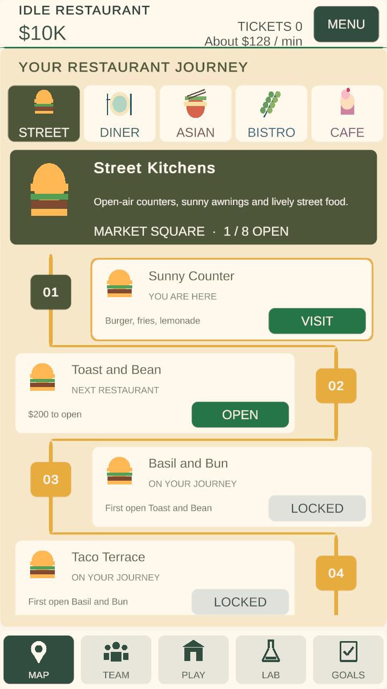
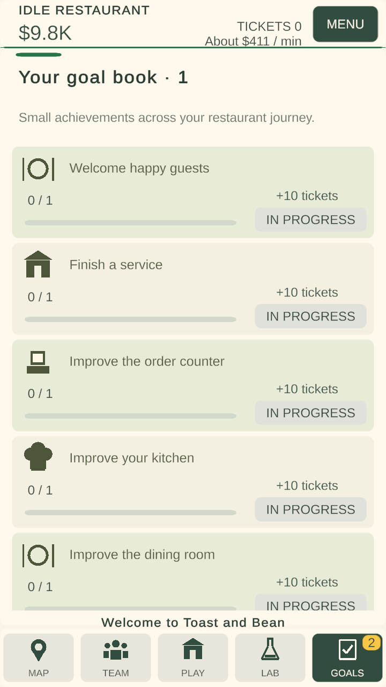
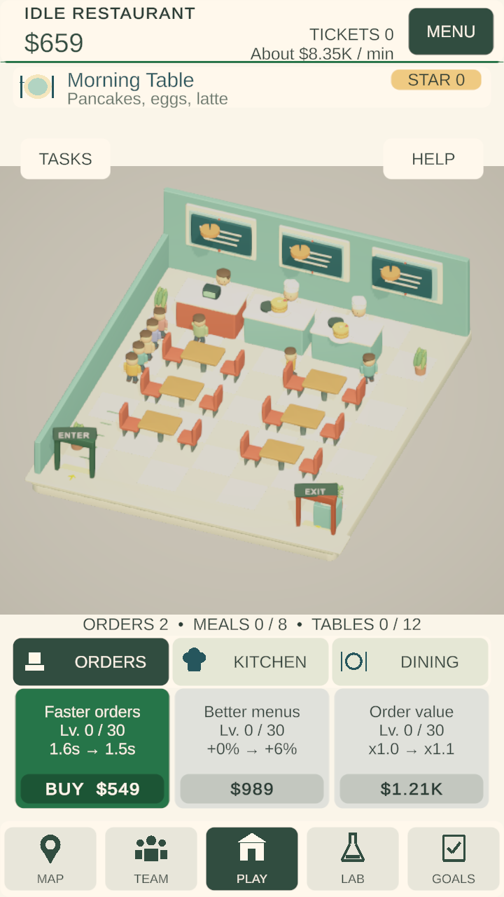
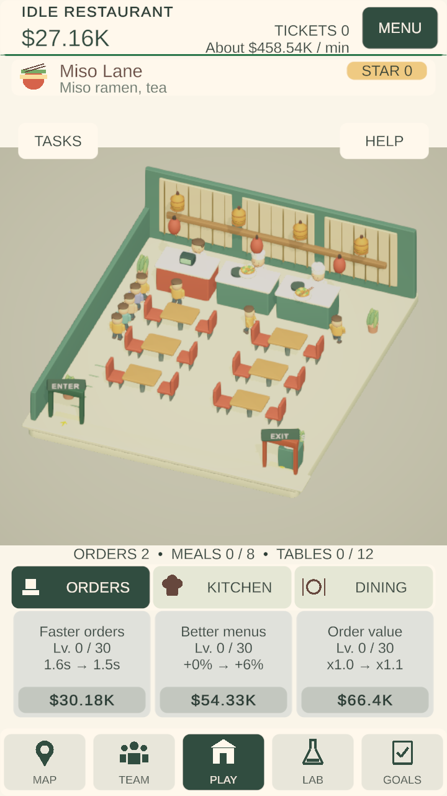
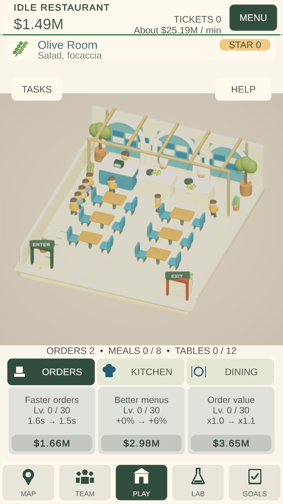
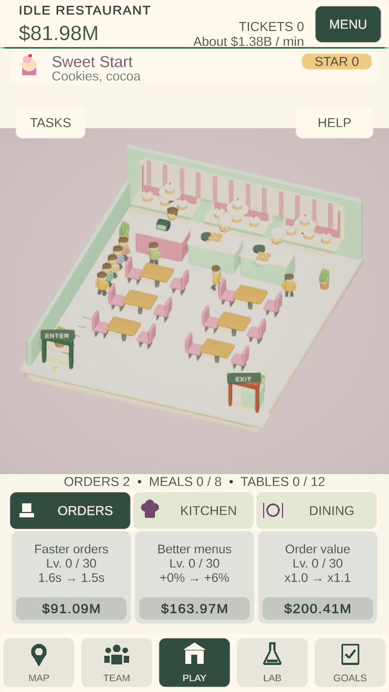

Implemented and tested on 8 November 2026. This update develops the progressive map, themed UI icon family, varied goal books and district identity. It retains the existing automatic restaurant loop.
The map now shows eight alternating, connected outlet stops per chapter. Five food-emblem tabs browse all districts, including future destinations. Each chapter has a palette, description, landmark name and open-outlet count. The current outlet is outlined; the next outlet shows its actual coin price; later outlets identify the restaurant that must open first. Insufficient cash disables Open. Browsing another chapter does not change the selected restaurant or bypass progression.
| District | Presentation |
|---|---|
| Street Kitchens · Market Square | Golden market palette, burger emblem, awnings and a mounted market sign. |
| Comfort Diners · Diner Avenue | Teal and warm peach, plate/cutlery emblem, checkerboard floor and menu-board backdrop. |
| Asian Kitchens · Lantern Court | Earth and amber palette, bowl/chopsticks emblem, bamboo screens and hanging lanterns. |
| Mediterranean Bistros · Olive Promenade | Blue and olive palette, olive-branch emblem, tiled backdrop, arches, pergola and olive planters. |
| Dessert Cafes · Berry Gardens | Berry and cream palette, dessert emblem, striped backdrop and tiered sweet displays. |
Navigation and Orders/Kitchen/Dining controls use a shared original vector icon component. Gameplay headings and stage icons reflect the active district. The green affordable / grey unavailable button convention is retained. Added scenery remains behind counters and outside customer paths; core controls and chair colliders are unchanged.
Each new book contains twelve objectives across eleven activity types: guests served, completed services, Orders upgrades, Kitchen upgrades, Dining upgrades, total improvements, opened restaurants, welcomed teammates, training levels, completed research and earned coins. Goals show numerical progress, a progress bar, ticket reward and explicit claim state. A yellow Goals badge counts ready, unclaimed rewards. Coins track total earned rather than current wallet balance, so buying an upgrade does not erase progress.
Default rewards remain 10 tickets per objective / 120 per book. This preserves the per-book budget, not the old reward timing: the old board required successive five-service thresholds; the new board rewards early achievements and spreads later goals across activities. This is an intentional economy-pacing change. No new measured total-playtime claim is made.
First-book targets are 1 guest, 1 service, 1 Orders upgrade, 1 Kitchen upgrade, 1 Dining upgrade, 5 upgrades, 1 additional outlet, 1 additional teammate, 1 training level, 1 research level, 150 coins and 5 services. Later books use the editable base-plus-growth targets. Coin targets scale by the selected outlet's income growth when the book starts. Baselines, kinds and targets are saved when a book begins. Finite goals are capped by remaining content; exhausted upgrade, expansion, recruitment, training or research goals become repeatable service goals. Claims cannot pay twice.
Existing goal books with claimed rewards or any service progress keep their old targets and claim bits until completion. The next book becomes varied. An old board with no progress can begin the varied system immediately. This avoids discarding unclaimed old-book progress. Save version 2 receives additive goal fields. Original on-disk user save and backup were restored byte-for-byte after testing; test saves were isolated.
All reports passed: 68 checks in the five-district run; 60 checks in the final UI/scenery rerun; 45 final model/migration/persistence checks; and 24 onboarding/presentation regression checks. These suites overlap and should not be added as independent test coverage.
| District | Guests | Service seconds | Plate returns / exits |
|---|---|---|---|
| 1 | 6 | 42.9 | 6 |
| 2 | 8 | 46.0 | 8 |
| 3 | 8 | 45.65 | 8 |
| 4 | 8 | 46.1 | 8 |
| 5 | 8 | 46.15 | 8 |
The five-district run completed 38 guest journeys with normal simulation timing. Additional runs covered final street scenery and the six-guest onboarding plus 22-guest busy service. Actual UI raycasts tested map unlocking and reward claims; scroll events moved each chapter's path. Seeded model checks covered all rewards, duplicate claims, book rollover, finite-content fallback, partially claimed and unclaimed legacy boards, and disk save/load. Final runtime console inspection reported no errors.
Five-district run · Final UI/scenery rerun · Final goal and migration model checks · Onboarding regression · Save restoration · Android build · APK verification






Edit Assets/Restaurant/Production/Data/RestaurantJourney.asset, referenced by RestaurantCatalog. Keep five district entries and twelve goal slots. District names, chapter descriptions, colours, landmark names and optional decoration-prefab slots are editable. A supplied decoration prefab replaces that district's additional procedural details; place it behind the counter and keep it out of customer routes. Existing environment and food prefab slots remain in RestaurantCatalog. Inspect each district in Play mode after replacing art.
Goal kind, base target, growth per book and reward are editable. Target and kind changes apply when a new book is generated because active books retain saved targets and metrics; unclaimed reward amounts read the content definition. Claimed rewards remain claimed. RestaurantGoals.cs owns accounting and migration; RestaurantJourneyUI.cs owns map and goal presentation; RestaurantSymbol.cs contains editable vector icon geometry; RestaurantDistrictDetails.cs adds scenery without changing simulation.
Run Restaurant → Verification → Verify district journey and varied goals in Play mode for the full suite. The public BeginUIOnly entry reruns UI/model checks plus the final street service. Existing doors/tutorial/upgrade verification writes this release's results to Verification/Journey/OnboardingRegression.
Core price formulas, service payouts, upgrade effects, research costs, outlet unlock prices and offline rules are unchanged. Districts share the existing guest-service mechanics; this update differentiates their presentation rather than introducing separate minigames. The 40 authored restaurants remain finite content, with repeating goals and existing restaurant stars supporting continued play.
The Android APK is a debug-signed testing build for Android 11+ ARM64, not a publisher-signed store release. Physical-device installation, touch, performance, notches and an upgrade over an existing phone save remain unverified. The broader forecast/runtime-income discrepancy and other earlier backlog items are outside this update.